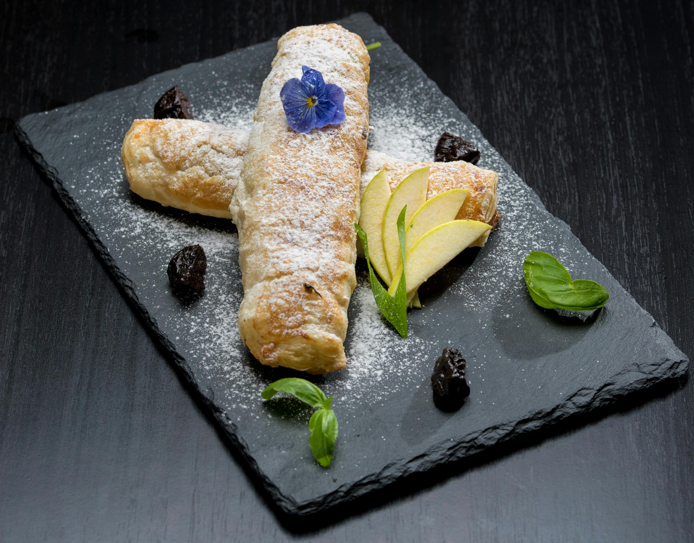

Viennese Apple Strudel
Back to Homepage
Viennese Apple Strudel (Apfelstrudel)

Recipe Description
Apple strudel is a classic Viennese dessert made with thin pastry, apples, raisins, breadcrumbs, butter, sugar, and cinnamon.
This recipe is inspired by a traditional Austrian version of Apfelstrudel, where the filling is wrapped in delicate pastry and baked until golden.
I like this recipe because it uses simple ingredients, but the final dessert feels elegant, warm, and comforting.
It can be served warm or cold, and it is especially good with icing sugar, whipped cream, or vanilla sauce.
Recipe Ingredients
All ingredients for this recipe are listed below:
For the apple filling
- 1.5kg apples, such as Elstar or a similar type
- 1 lemon, juiced
- 60g raisins, soaked in rum
- 200g butter, melted
- 100g sugar
- 2 tablespoons vanilla sugar
- 100g breadcrumbs
- 1 pinch cinnamon powder
- Icing sugar for dusting
- Butter for brushing
- 1 egg for brushing
For the strudel pastry
- 250g fine flour
- 1 pinch salt
- 1 tablespoon oil
- 125ml lukewarm water
- 2 tablespoons melted butter for brushing
- 2 egg yolks for brushing
- Oil for coating the dough
- Flour for the work surface
- Icing sugar for dusting
Instructions
For the strudel pastry
- Place the flour on a clean work surface and add the salt, oil, and lukewarm water.
- Knead the ingredients together until you have a smooth and elastic dough.
- Shape the dough into a ball and place it in a bowl lightly coated with oil.
- Cover the dough and refrigerate it, preferably overnight.
- On a lightly floured surface, roll the dough into a square using a rolling pin.
- Carefully stretch the dough by hand until it becomes very thin and almost transparent.
For the apple strudel
- Preheat the oven to 180°C.
- Peel and core the apples, then slice them very thinly.
- Drizzle the apple slices with lemon juice to keep them from browning.
- In a small bowl, combine the raisins with 1 tablespoon of vanilla sugar.
- Brush the stretched pastry dough with half of the melted butter.
- Use the remaining melted butter to fry the breadcrumbs until lightly golden.
- Mix the toasted breadcrumbs with the remaining vanilla sugar and the cinnamon.
- Sprinkle the breadcrumb mixture evenly over the pastry.
- Spread the sliced apples and raisins evenly over the pastry.
- Use a clean dish towel to help roll the pastry into a strudel shape.
- Close the ends well so the filling does not leak out while baking.
- Place the strudel on a greased baking tray. If it is too long for the tray, bend it gently into a horseshoe shape.
- Brush the top with beaten egg or melted butter.
- Bake for 30-40 minutes, or until the pastry is golden and cooked through.
- Let the strudel cool slightly, then dust it with icing sugar before serving.
Notes
- Ready-made strudel pastry can be used instead of homemade pastry.
- The dough should be stretched very thin, almost transparent, for a more traditional texture.
- The strudel can be served warm or cold.
- Vanilla sauce, whipped cream, or vanilla ice cream would all work well with this dessert.
- If you do not want to use rum, the raisins can be soaked in warm water instead.
Nutrition
Calories: Not provided | Carbohydrates: Not provided | Protein: Not provided | Fat: Not provided | Saturated Fat: Not provided | Cholesterol: Not provided | Sodium: Not provided | Potassium: Not provided | Fiber: Not provided | Sugar: Not provided | Iron: Not provided